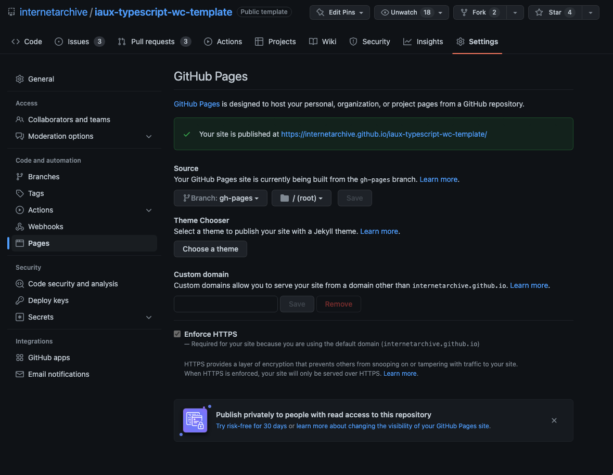

@internetarchive/your-webcomponent


Internet Archive Typescript WebComponent Template
This is a base template for creating Typescript WebComponents. It is based off of the Open WebComponents generator with some IA-specific customizations and some development niceities.
Usage
- Click the "Use this Template" button in GitHub to create a new repository based on this one.
- Clone your new repo and update the things below:
Things to update in your copy
- Remove this section
- Search for the strings
your-webcomponentandYourWebComponentand those are most of the spots that need to be updated. README.md(this file). Update the readme in general, but also the badge URLspackage.jsonUpdate the name and description- Rename the
your-webcomponent.tsand its associated.testfile - Enable
Codecovandrenovatein the GitHub Apps section if not already enabled (be sure not to enablepre-commit) - Set up a Codecov token (see Codecov Setup)
Local Demo with web-dev-server
Add 127.0.0.1 local.archive.org to your /etc/hosts file
npm run start
NOTE The first time you visit the site, the browser will say the site is insecure because it's using a self-signed certificate. Accept the certificate and visit the site and the browser will then accept the certificate in the future. It may always say the site is insecure, but for the purposes of development, it's secure enough.
To run a local development server that serves the basic demo located in demo/index.html
Testing with Web Test Runner
To run the suite of Web Test Runner tests, run
npm run test
To run the tests in watch mode (for <abbr title="test driven development">TDD</abbr>, for example), run
npm run test:watch
Releasing alpha and production tagged packages to NPM
Releasing alpha and test packages
- Use your Jira ticket to create your namespace. This will prevent collision as many people can be simultaneously working in the same repository.
- run:
npm version prerelease --preid=wedev-1234- this command will help auto-increment your alpha package tags inside your jira ticket namespace. refer to npm versioning docs & [guides for more info on command options](- this command will help auto-increment your alpha package tags inside your jira ticket namespace)
- run:
npm publish --tag alphaour most used development tags are: alpha, canary
- run:
Releasing production level package
We like to create a pull request specifically after the expected changes are merged into the main branch. Steps:
- create PR with version number as branch name. Ex, if the next version is 3.2.1, your git command will be:
git checkout -b v3.2.1- in the new branch, run the following:
git pull --tagsto fetch all git tagsnpm version X.X.Xto set the new tag WITH the commit git taggedgit push --tagsnpm publish
- in the new branch, run the following:
- Note: version numbers must start at minimum, with 1 (1.x.x) in order for consumers to automatically receive patch updates (no tags starting with 0, like 0.x.x)
Linting with ESLint, Prettier, and Types
To scan the project for linting errors, run
npm run lint
To automatically fix many linting errors, run
npm run format
Tooling configs
For most of the tools, the configuration is in the package.json to reduce the amount of files in your project.
If you customize the configuration a lot, you can consider moving them to individual files.
Codecov setup
Finding your token
- Log in at https://codecov.io/ with your GitHub account
- Switch from your personal organization to
internetarchiveif needed, by toggling at the top of the screen or visiting https://app.codecov.io/gh/internetarchive directly - Find your repository and hit the
Configurebutton or visithttps://app.codecov.io/gh/internetarchive/YOUR-REPO-NAME/config - Go the
Generaltab and find theTokenssection - Copy everything after
CODECOV_TOKEN=
Adding your token
- Return to your repository and go to
Settings>Secrets and variables(underSecurity) >Actions - Select
New repository secret - Name your secret
CODECOV_TOKENand paste in the token you just copied - Select
Add Secret
Adding your badge
- Back in
Configurationin Codecov, go to theBadges & Graphssection - Copy the Markdown version of the badge
- Delete the current Codecov badge at the top of this README and replace it with your new badge
Steps to setup gh-pages static site generator
Let's start with creating a gh-pages branch.
This branch is where Github will look for the index.html to be hosted
git checkout --orphan gh-pages
git reset --hard
git commit --allow-empty -m "Initializing gh-pages branch"
git push origin gh-pages
Additional setup
- Go to repo
Settings-> sidebarPages - In the
Sourcedrop-down, choose the branch where you want to host your Github Pages and thedirectorywhere it was hosted- We'll use
gh-pagesbranch for this but you can use other branch name for this - Just make sure that's the branch where the
index.htmlthat you want to host lives in
- We'll use

Manual Deploy using gh-pages
You can update the current Github Page without pushing a commit by running:
npm run ghpages:publish
This build script does the following, see package.json:
-
ghpages:publish- This executes
ghpages:preparein the current branch you are currently working on- Note: The branch name is required so that it will not override the whole Github Pages directory
- You can check it by navigating through the branch name files directory you set from the step to setup
gh-pagesbranch- You can checkout how it looks like in one of our projects here: https://github.com/internetarchive/iaux-collection-browser/tree/gh-pages
- This executes
-
ghpages:prepare- This executes
ghpages:buildthat builds the project dependencies and generatesvitebuild from it - We use vite to bundle and generate the static assets that we host in Github Pages
- See
vite.config.tsrelated to this
- See
- This executes
-
ghpages:generate- This executes
gh-pagesnpm package command to publish/upload the generated files from ourvitebuild files - Upon executing this command:
- This generates a commit message formatted from the most recent commit message of the branch
- Push the commit to
gh-pagesbranch that we setup earlier
- This executes
The live demo app URL from current branch will look something like this:
https://<organization_name_or_username>.github.io/<repo_name>/<branch_name>/demo
Automatic Deploy of Demo App
Things that trigger automatic site generation:
-
a merge to
main- See workflow:
gh-pages-main.yml - Example:
https://<organization_name_or_username>.github.io/<repo_name>/main
- See workflow:
-
a pull request against
main- See workflow:
pr-preview.yml- The URL for your Pull Request will be deleted after merging to main but you can update that in the config
- When you create a Pull Request, if your code passes codecov unit tests, it will be always served live at base URL/pull request number.
- Example:
https://<organization_name_or_username>.github.io/<repo_name>/pr/<pr-number>/demo- Note that
demois another directory where theindex.htmllives in - You are free to playaround with it and set your desired file directory/structure on your end
- Note that
- See workflow:
Another thing to note: pushing a branch up alone will not trigger site creation.
Happy devving ^_^ 🥳 🎉